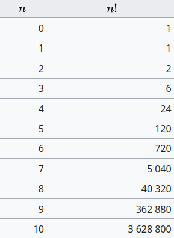
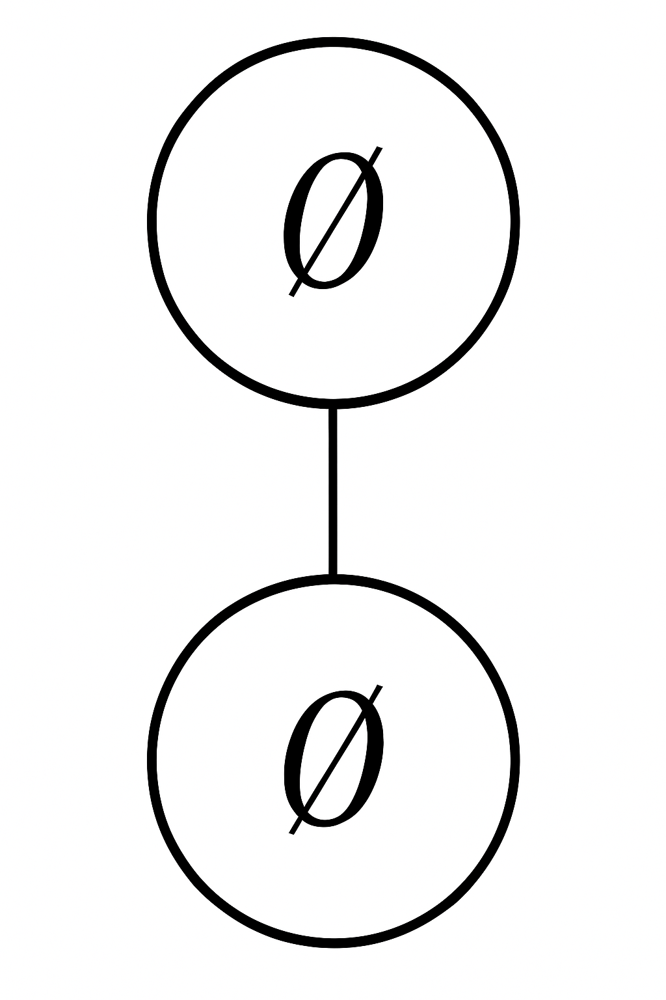
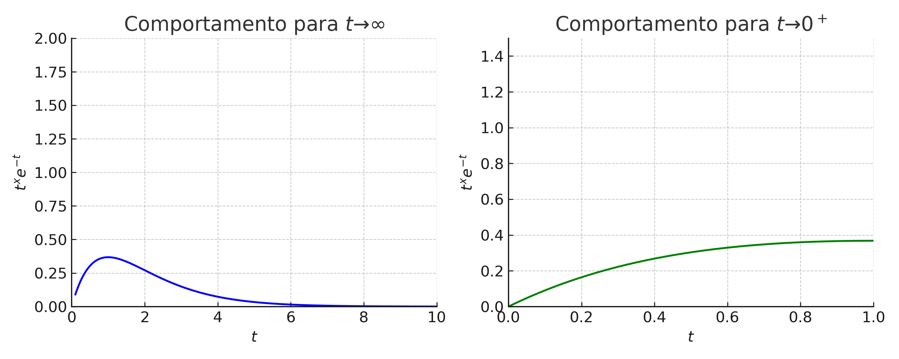
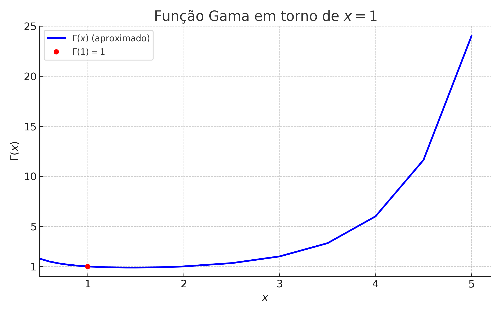
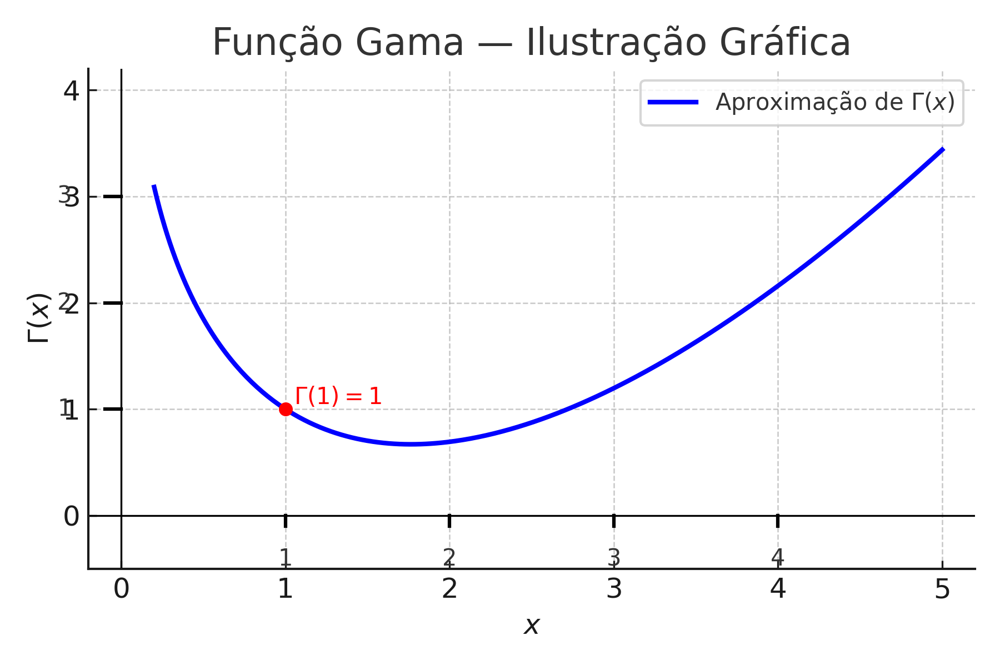

📘 🧮 Why is 0! = 1?
← Back to the Mathematics Reading Guide 🧭 🧮
← Back to the Mathematics Section 🧮

1 📘 🧮 Why is 0! = 1?
In this post we explore 10 distinct justifications for the value of \(0!\). Each section below was adapted from an original LaTeX Beamer presentation and keeps the didactic spirit with formulas and examples.
1.1 🧠 Form 1: Combinatorial Interpretation
The factorial \(n!\) represents the number of ways to arrange \(n\) distinct elements.
- For \(n = 3\): \(3! = 6\) permutations
- For \(n = 2\): \(2! = 2\) permutations
- For \(n = 1\): \(1! = 1\) permutation
- For \(n = 0\): How many permutations of the empty set?
Answer: \[ \boxed{1 \text{ permutation (the empty set itself)}} \] \[ \Rightarrow \boxed{0! = 1} \]
1.1.1 🌳 Illustration: Combinatorial Interpretation
The factorial \(n!\) represents the number of permutations of \(n\) elements.
Example: permutations of \(\{a, b\}\)
\[ \begin{aligned} 2! &= 2: \{a,b\}, \{b,a\} \\\\ 1! &= 1: \{a\} \\\\ 0! &= 1: \{\,\} \text{ (empty set)} \end{aligned} \]

Visual representation of permutations
Conclusion: There are exactly \(\boxed{1}\) ways to arrange zero elements.
\[ \boxed{0! = 1} \]
1.2 🔁 Form 2: Recursive Definition
The factorial function is defined recursively:
\[ n! = n \cdot (n - 1)!, \quad \text{with } 1! = 1 \]
Applying the definition for \(n = 1\):
\[ 1! = 1 \cdot 0! \Rightarrow 1 = 1 \cdot 0! \Rightarrow \boxed{0! = 1} \]
This definition is essential for the factorial function to be valid from \(n = 1\) onward.
1.2.1 🌳 Illustration: Recursive Definition

- \(3! = 3 \cdot 2!\)
- \(2! = 2 \cdot 1!\)
- \(1! = 1 \cdot 0! \Rightarrow 0! = 1\)
\(\boxed{0! = 1}\) is necessary so that the recursion “terminates” correctly.
1.3 🔢 Form 3: Binomial Coefficient
Use the binomial coefficient formula:
\[ \binom{n}{k} = \frac{n!}{k!(n-k)!} \]
Special case:
\[ \binom{0}{0} = \frac{0!}{0! \cdot 0!} \Rightarrow 1 = \frac{0!}{(0!)^2} \Rightarrow (0!)^2 = 0! \] \[ \Rightarrow \boxed{0! = 1} \]
This ensures that combinatorial formulas remain valid for \(n = 0\).
1.3.1 🧩 Illustration: Binomial Coefficient

There is exactly one way to choose 0 elements from the empty set.
1.4 🧬 Form 4: Gamma Function
The Gamma function generalizes the factorial to real and complex numbers:
\[ \Gamma(n) = \int_0^{\infty} x^{n-1} e^{-x} \, dx, \quad \text{for } n > 0 \]
It satisfies the relation:
\[ \Gamma(n+1) = n! \quad \text{when } n \in \mathbb{N} \]
Therefore:
\[ 0! = \Gamma(1) = \int_0^{\infty} e^{-x} \, dx = \left[ -e^{-x} \right]_0^{\infty} = \] \[ = 0 - (-1) = 1 \]
Thus, the definition \(0! = 1\) is consistent with the Gamma function.
1.4.1 🧠 Proof that \(\Gamma(n+1) = n!\)
1. Definition of the Gamma function:
\[ \Gamma(x) = \int_0^{\infty} t^{x-1} e^{-t} \, dt \]
2. Fundamental property:
\[ \Gamma(x+1) = x \cdot \Gamma(x) \]
3. Base case: \(\Gamma(1) = \int_0^{\infty} e^{-t} \, dt = 1 = 0!\)
4. Inductive step: Assume \(\Gamma(k+1) = k!\). Then:
\[ \Gamma(k+2) = (k+1) \cdot \Gamma(k+1) = \] \[ = (k+1) \cdot k! = (k+1)! \]
Conclusion:
\[ \boxed{\Gamma(n+1) = n! \quad \text{for all } n \in \mathbb{N}} \]
1.4.2 📐 Proof of the Property \(\Gamma(x+1) = x \cdot \Gamma(x)\)
Goal: Show that
\[ \Gamma(x+1) = x \cdot \Gamma(x) \]
Definition of the Gamma function:
\[ \Gamma(x+1) = \int_0^{\infty} t^x e^{-t} \, dt \]
Integration by parts formula:
\[ \int u \, dv = uv - \int v \, du \]
Applying integration by parts:
- Let \(u = t^x \Rightarrow du = x t^{x-1} \, dt\)
- Let \(dv = e^{-t} \, dt \Rightarrow v = -e^{-t}\)
Applying the formula:
\[ \Gamma(x+1) = -t^x e^{-t} \Big|_0^\infty + \int_0^{\infty} x t^{x-1} e^{-t} \, dt \]
Analyzing the boundary term:
\[ \lim_{t \to \infty} t^x e^{-t} = 0, \quad \lim_{t \to 0^+} t^x e^{-t} = 0 \; \text{(for $x > 0$)} \]
Hence:
\[ -t^x e^{-t} \Big|_0^\infty = 0 \]
Therefore:
\[ \Gamma(x+1) = x \int_0^\infty t^{x-1} e^{-t} \, dt = x \cdot \Gamma(x) \]
Thus, the relation holds for all \(x > 0\).
1.4.3 🔎 Justification of the Limits
To apply integration by parts, we show that:
\[ \lim_{t \to \infty} t^x e^{-t} = 0 \quad \text{and} \quad \lim_{t \to 0^+} t^x e^{-t} = 0 \quad (x > 0) \]
1. As \(t \to \infty\):
\[ \frac{t^x}{e^t} \to 0 \]
since the exponential dominates any power.
Therefore:
\[ \boxed{\lim_{t \to \infty} t^x e^{-t} = 0} \]
2. As \(t \to 0^+\):
\[ t^x \to 0, \quad e^{-t} \to 1 \quad \Rightarrow \quad t^x e^{-t} \to 0 \cdot 1 = 0 \]
Therefore:
\[ \boxed{\lim_{t \to 0^+} t^x e^{-t} = 0} \]
Both limits ensure the boundary term of the integration by parts vanishes.
1.4.4 📊 Visualizing the Limits with Graphs

Behavior of \(t^x e^{-t}\) as \(t \to 0^+\) and \(t \to \infty\).
1.4.5 📈 Graph of the Gamma Function

The plot shows that \(\Gamma(x)\) is continuous and satisfies \(\Gamma(1) = 1\), hence \(0! = 1\).
1.4.6 🧮 Gamma Function — Graphic Illustration

The plot highlights that \(\Gamma(1) = 1\), which justifies that \(0! = 1\).
1.5 🧩 Form 5: Limit of the Gamma Function
The Gamma function extends the factorial beyond positive integers. We can define:
\[ 0! = \lim_{x \to 0^+} \Gamma(x + 1) = \Gamma(1) = 1 \]
Justification via continuity of the analytic extension of the factorial.
1.6 ✴️ Form 6: Empty Product and Product Definition
The general definition of factorial as a product:
\[ n! = \prod_{k=1}^{n} k \]
Applying this definition for \(n = 0\):
\[ 0! = \prod_{k=1}^{0} k = 1 \]
In algebra, the product over an empty set equals 1, because 1 is the multiplicative identity.
1.7 🔄 Form 7: Permutation \(P(0,0)\)
The general formula for permutations is:
\[ P(n, r) = \frac{n!}{(n - r)!} \]
Applying with \(n = 0\) and \(r = 0\):
\[ P(0, 0) = \frac{0!}{0!} = 1 \]
For the number of permutations of \(0\) elements to be \(1\), it is necessary that \(0! = 1\).
1.8 🔢 Form 8: Taylor Series of \(e^x\)
The exponential function has the following Taylor series expansion:
\[ e^x = \sum_{n=0}^\infty \frac{x^n}{n!} \]
The constant term of the series is:
\[ \frac{1}{0!} \]
We know that:
\[ e^0 = 1 \quad \Rightarrow \quad \frac{1}{0!} = 1 \quad \Rightarrow \boxed{0! = 1} \]
1.9 🧮 Form 9: Logarithm of the Factorial
A known identity relates the factorial to logarithms:
\[ \log(n!) = \sum_{k=1}^{n} \log(k) \]
Applying with \(n = 0\):
\[ \log(0!) = \sum_{k=1}^{0} \log(k) = 0 \quad \Rightarrow \quad \boxed{0! = 1} \]
The empty sum returns zero, preserving the coherence of the logarithm property.
1.10 💻 Form 10: Computational Systems
The definition \(0! = 1\) is universally adopted in programming languages and software:
Python:math.factorial(0)returns1R:factorial(0)returns1Julia:gamma(1)returns1Mathematica:Factorial[0]returns1
All follow the standard mathematical convention:
\[ \boxed{0! = 1} \]
1.11 🧠 Conclusion
Each approach leads us to the same result:
\[ \boxed{0! = 1} \]
This equality is consistent with:
- combinatorial logic,
- the recursive definition,
- algebraic binomial formulas,
- the Gamma function generalization,
- continuity of the Gamma function,
- the empty product definition,
- coherence with permutations \(P(n,n)\),
- validity of the Taylor series of \(e^x\),
- the logarithm definition of the factorial,
- and computational implementation.
A well-chosen definition is a bridge between ideas.
← Back to the Mathematics Reading Guide 🧭 🧮
← Back to the Mathematics Section 🧮
Blog do Marcellini — Exploring Mathematics with Rigor and Beauty.
Created by Blog do Marcellini with ❤️ and code.